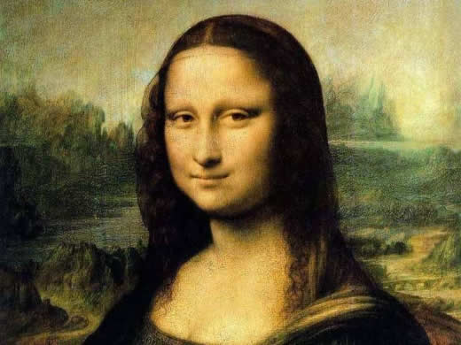
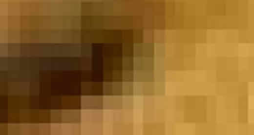
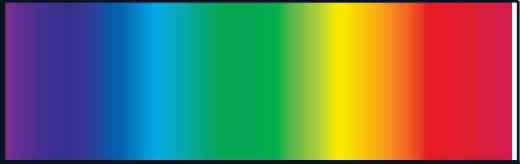

Digitalização de Imagens
5 minutos de leitura
Transcrevendo
Obs: Esse texto é de total autoria e todos os créditos são de © Benito Piropo Da-Rin.
O texto original foi retirado de: http://www.bpiropo.com.br/fpc20050110.htm
Compartilho o texto aqui tanto para estudos pessoais como para compartilhar para mais pessoas que se interessam por esse conhecimento.
Quando discutimos o emprego do sistema binário para processar dados comentamos que o uso exclusivo dos algarismos “ 1” e “ 0” nos circuitos internos dos computadores pode levar a crer que essas máquinas apenas servem para resolver problemas muito específicos, cujas grandezas de entrada e saída assumem apenas dois valores e que portanto sua utilização há de ser extremamente limitada. Porém, na mesma ocasião, afirmamos que esta conclusão é falsa, pois toda e qualquer grandeza do mundo real, seja ela qual for, pode ser codificada e representada sob a forma de um conjunto de números, um procedimento denominado “digitalização”.
Mas como isso é possível?
Vamos começar, à guisa de exemplo, com a descrição da digitalização de imagens. E já que vamos trabalhar com imagens, façamo-lo em grande estilo. Diga lá: em termos de criação do engenho humano, qual seria a imagem mais famosa do mundo?
Não sei em qual imagem você pensou. Mas, para mim, não há dúvida que a mais famosa das imagens jamais produzida pela genialidade humana é “La Gioconda”, magnífica pintura de Leonardo da Vinci também conhecida por Mona Lisa. Uma imagem tão famosa que uma pesquisa no banco de imagens do Google com “gioconda” retorna 6.740 imagens, “monalisa” retorna 14.800 e “mona lisa” retorna 30.500. Portanto, mesmo aqueles que discordarem do fato dela ser “a mais famosa” hão de concordar que pelo menos ela é suficientemente famosa para que a usemos como exemplo. E, para quem não lembra dela, veja aí na Figura 1 como ela é (imagem obtida na Internet sem citação do autor da foto).

Essa pintura é tão admirável que já inspirou músicas, poemas, contos e paixões. Quem já a viu de perto não pode negar que ela contém, realmente, uma magia que faz com que seja inviável permanecer impassível diante dela. Dizem que a principal razão desse mistério é seu sorriso enigmático. Vamos, então, examiná-lo um pouco mais de perto. Veja, na Figura 2, o sorriso da Mona Lisa grandemente ampliado.
Ficou meio esquisito, não? Parece meio borrado, surgem umas marcas irregulares, a figura parece granulada, mal se consegue distinguir o sorriso. Mas ele está lá. A Figura 2 nada mais é que a boca da Gioconda muito ampliada. Por que será que apareceram aquelas irregularidades? Vamos ver. Ampliemos mais ainda, desta vez apenas o canto direito da boca. O resultado é o mostrado na Figura 3.

Agora, a imagem da Figura 3 ficou quase irreconhecível. Se não soubéssemos do que se trata, ela não faria sentido. Mas comparando com atenção com a Figura 2 dá para perceber que a Figura 3, de fato, mostra o canto direito do sorriso da Mona Lisa. Agora, repare nela com mais atenção e note que ela não passa de uma montagem feita a partir de pequenos quadrados coloridos, ou células, cada célula de uma cor homogênea (se você não percebe isso nesta imagem, examine-a em alta resolução).
Ora, mas a Figura 3 nada mais é que um trecho da Figura 1 extremamente ampliada. E, se é assim, é fácil concluir que a própria Figura 1 também pode ser decomposta em pequenas células, cada uma de uma única cor homogênea. Essas células de imagens somente não são percebidas na Figura 1 porque são demasiadamente pequenas para serem distinguidas a olho nu. Mas se toda a Figura 1 for ampliada na mesma proporção em que ampliamos o canto da boca da Gioconda exibido na Figura 3, suas células de imagem seriam perfeitamente identificáveis.
Esse procedimento, evidentemente, pode ser repetido para qualquer imagem. Ou seja: subdividi-la em células, cada uma contendo uma única cor homogênea.
Para reproduzir a imagem, então, basta desenhar célula por célula, cada uma na sua posição, e atribuir a cada célula a cor correspondente à da imagem original.
Se conseguirmos exprimir as cores através de números, a imagem pode ser inteiramente codificada, célula a célula, e reproduzida usando esses códigos.
Mas será que podemos codificar as cores?
Explicando melhor: imagine que você deseja informar a uma pessoa situada em um local distante a coloração exata de um determinado objeto. O problema é que você não tem nenhuma forma de transmitir a essa pessoa uma imagem em cores. Mas pode transmitir números. Será que dá para exprimir cores através de números?
Encerramos a coluna passada com uma pergunta: como enviar a um interlocutor situado à distância a matiz exata de uma cor usando apenas um dispositivo capaz de transmitir números?
Bem, se tanto você quanto seu interlocutor dispuserem da mesma paleta de cores e da mesma tabela que atribua um número a cada matiz de cada cor, a coisa fica mais fácil. Basta que você compare a cor do objeto com as cores disponíveis na paleta até encontrar uma cor que coincida exatamente com a do objeto, anote o número atribuído a essa cor e o transmita para a outra pessoa. Ela, por sua vez, entrará na tabela com o número que você enviou e ao descobrir na paleta a cor correspondente saberá exatamente a coloração de seu objeto. Tudo o que vocês precisam é uma paleta que contenha todas as cores visíveis.
Ora, mas vocês já têm essa paleta. Aliás, todos a temos. Basta olhar para o céu em um dia chuvoso mas em que o sol brilhe através das nuvens que, com um pouco de sorte, você a verá. Ela chama-se “arco-íris” e corresponde à decomposição da luz branca em todas as cores do espectro visível. Note bem: TODAS as cores do espectro visível, ou seja, todas as que podem ser percebidas pelo nosso olho. Elas são mostradas na Figura 1.

Neste ponto é imprescindível fazer uma observação: se você está lendo essa coluna em um computador, o que é bastante provável uma vez que ela é publicada na Internet, o que você vê exatamente na Figura 1 (assim como nas demais figuras) depende essencialmente da qualidade e dos ajustes de seu monitor de vídeo. Embora você vá entender melhor as razões disso na medida que prosseguir a leitura, fica desde agora estabelecido que se seu monitor é de alta resolução e está ajustado para exibir grande número de cores, você verá uma imagem suave cujas cores variam gradualmente (ou em “degradê”). Do contrário você verá apenas faixas verticais perfeitamente identificáveis, cada uma de uma cor homogênea. Se for este o caso, use a imaginação e visualize a Figura 1 pensando no arco-íris, onde as cores se mesclam tão suavemente que é impossível distinguir onde “termina” uma e “começa” a vizinha.
Agora imagine que você não é muito exigente em matéria de cores e não faz questão de uma reprodução fiel. Então pegue a Figura 1 e a divida horizontalmente em 256 faixas verticais. Cada faixa corresponderá a uma cor. Numere as faixas de zero a 255, zero correspondendo à faixa vertical preta da extremidade esquerda, 255 correspondendo à faixa branca da extremidade direita e os demais números correspondendo a faixas coloridas igualmente espaçadas ao longo da figura. Pronto, aí está sua tabela de cores, cada cor correspondendo a um número (se você estiver lendo isso em um computador e quiser se dar ao trabalho de ver como essa coisa fica de verdade, ajuste seu monitor para exibir apenas 256 cores e examine novamente a Figura 1).
É claro que se você usar esse critério para reproduzir imagens o resultado será uma reprodução de péssima qualidade. No que diz respeito a cores, para melhorar a qualidade da reprodução você pode recorrer à mesma paleta de cores da Figura 1, dividindo-a em um número maior de faixas verticais. Se não for demasiadamente exigente, divida em 65.536 cores e terá uma reprodução razoavelmente satisfatória (lembre-se: não importa como você o veja na Figura 1, o espectro visível real, o do arco-íris, contém TODAS as cores que podem ser percebidas pelo olho humano). Mas se você for muito exigente mesmo e fizer questão de uma qualidade de reprodução extraordinária, divida-a em mais de dezesseis milhões de faixas verticais e terá mais de dezesseis milhões de cores (precisamente 16.777.216 cores; logo veremos porque usar esses números aparentemente tão estranhos).
O problema de transmitir uma cor está resolvido. Agora vejamos como transmitir a imagem inteira.
Na coluna passada concluímos que qualquer figura pode ser subdividida em pequenos pontos, denominados células de imagem, atribuindo-se a cada um deles uma cor homogênea (lembre-se da grande ampliação do trecho da imagem, que ficou reduzida a uma colagem de pequenos quadrados de cor uniforme; cada um daqueles quadrados é uma célula de imagem).
Pois bem: se no que diz respeito à cor, a qualidade da imagem depende do número de faixas em que dividimos o espectro, no que toca à nitidez da imagem sua qualidade dependerá do número de células em que foi dividida: quanto maior este número, melhor a qualidade (ou seja: quanto menor o tamanho da célula de imagem, melhor a qualidade).
Podemos considerar que um retângulo, como a tela de seu monitor de vídeo, pode ser subdividido em células que se dispõem lado a lado em linhas situadas umas sobre as outras. Por exemplo: imagine que sua tela possa ser dividida em 480 linhas horizontais, cada uma delas contendo 640 pontos, cada um deles podendo assumir uma cor uniforme. Esses pontos seriam as células de imagem. Agora, imagine que a tela contenha uma imagem que você deseja codificar para enviar a seu interlocutor. Será possível?
Sim, vai dar um trabalho danado, mas é possível. Comece pelo ponto situado no canto superior esquerdo. Compare sua cor com a paleta de cores e anote o número correspondente. Passe para o ponto seguinte da mesma linha horizontal e repita o procedimento ponto a ponto, anotando o número da cor de cada ponto até o ponto situado na extremidade direita da primeira linha. Passe então para o primeiro ponto da segunda linha, o situado mais a esquerda, e anote o número de sua cor após o número da cor do último ponto da linha de cima. Faça isso linha a linha, anotando um número de cor depois do outro. Note que você não precisa se preocupar com a posição do ponto, já que como você está anotando sempre da esquerda para a direita, linha a linha, de cima para baixo, a posição de cada ponto já fica estabelecida pela posição do número de sua cor na lista que você está produzindo. O resultado será uma longa lista de 307.200 números (o produto de 640 linhas por 480 colunas) cada um representando a cor de uma célula de imagem.
Quando seu interlocutor receber a lista, pegará o primeiro número e, recorrendo à tabela, descobrirá a que cor ele corresponde, desenhando um pequeno ponto desta cor no canto superior esquerdo de sua tela. Fará o mesmo com o segundo número e obterá o ponto situado ao lado do primeiro. Repetirá este procedimento 640 vezes para desenhar a primeira linha e prosseguirá, número a número, linha a linha, até chegar ao último ponto, o situado na extremidade direita da linha situada na base da tela. Quando ele terminar, terá uma reprodução exata da imagem contida em sua tela. Uma reprodução idêntica porque foi criada ponto a ponto com cores exatamente iguais.
Agora, paremos um pouco para examinar o que acabamos de fazer. Pegamos uma imagem original, subdividimo-la em pontos, atribuímos a cada ponto uma cor homogênea e convertemos essas cores para números. Com números podem ser expressos em qualquer sistema numérico, nada nos impede de exprimir os números das cores no sistema binário. Resumindo: codificamos uma imagem em números expressos no sistema binário.
Acabamos de digitalizar nossa primeira imagem.
Mas como classificar a qualidade dessa imagem digitalizada? Explicando melhor: digamos que ela seja a reprodução do quadro La Gioconda. Como compará-la em termos de qualidade de reprodução com o quadro original?
Bem, isso depende do número de pontos (células de imagem) em que a imagem original foi dividida e do número de cores em que foi dividido o espectro visível.
O número de células em que uma imagem é dividida denomina-se “resolução” da imagem. Imagens de alta resolução são aquelas divididas em grande número de pequenos pontos. Como você já deve ter percebido, “célula de imagem” em inglês é “picture cell”, que se abrevia “pixel”. Os monitores de vídeo exprimem a resolução das imagens que exibem pelo produto do número de linhas pelo número de colunas. As resoluções mais comuns atualmente variam de 480 linhas por 640 colunas (640x480) a 1.200 linhas por 1.600 colunas (1.600x1.200). Quanto maior a resolução, melhor a qualidade da imagem reproduzida em termos de nitidez.
Já o número de cores pode ser ajustado para 256, para 65.656 (“High Color”, ou 64K colors) ou para 16.777.216 (“True color”, ou 16M cores). Esses números não foram escolhidos ao acaso. Como já mencionado, para poder ser processado por um computador, o resultado da digitalização tem que ser expresso no sistema binário. Ora, 256 é o número de cores que podem ser expressas usando um número binário de oito bits (ou um byte), 65.656 cores podem ser expressas em um número de dezesseis bits (dois bytes) e 16.777.216 cores podem ser expressas em um número de 24 bits (três bytes). Assim, quando se usam apenas 256 cores, para exprimir a cor de uma célula de imagem, ou pixel, basta um byte. Já uma imagem em “High Color” (64 K cores) usa dois bytes por pixel e uma imagem “True Color” (16M cores) usa três bytes por pixel (alguns controladores de vídeo usam quatro bytes por pixel, mas isso não aumenta o número de cores, aumenta apenas a rapidez com que a imagem é reproduzida porque os bytes que representam as cores são lidos na memória mais rapidamente se agrupados quatro a quatro; mesmo porque não adianta aumentar o número de cores além de dezesseis milhões, já que o olho humano não teria sensibilidade para distinguir matizes tão próximos).
Em resumo: combinando a resolução com o número de cores pode-se reproduzir com a qualidade desejada qualquer imagem baseando-se apenas em uma longa lista de números, cada um deles representando a cor de um “pixel”, ou célula de imagem. Uma imagem de tamanho razoável (digamos, do tamanho da tela de um monitor de 21 polegadas) com resolução de 1.200x1.600 e “True color” nada fica a dever ao original. Já uma imagem com resolução de 640x480 e 256 cores, mesmo em um velho monitor de 14 polegadas, apresenta uma qualidade extremamente pobre.
Pronto: em duas colunas conseguimos detalhar razoavelmente o processo de representar imagens através de números, ou a “digitalização de imagens”. Um processo que consiste em converter imagens em uma lista (ou “vetor”) de números binários que podem ser processados pelo computador e que permitem armazená-las nos dispositivos de armazenamento (como discos rígidos, CDs e DVDs) ou reproduzi-las nos dispositivos de exibição de imagens (como monitores de vídeo e projetores).